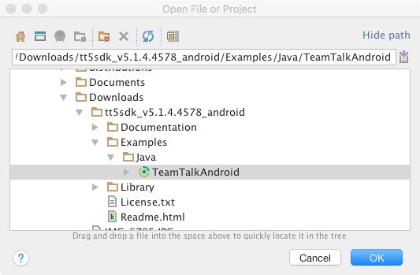
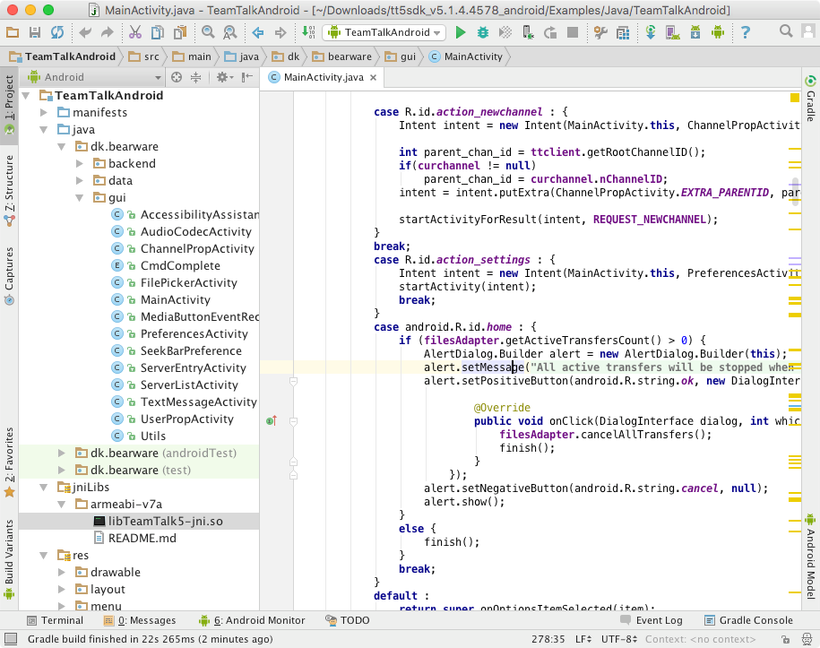
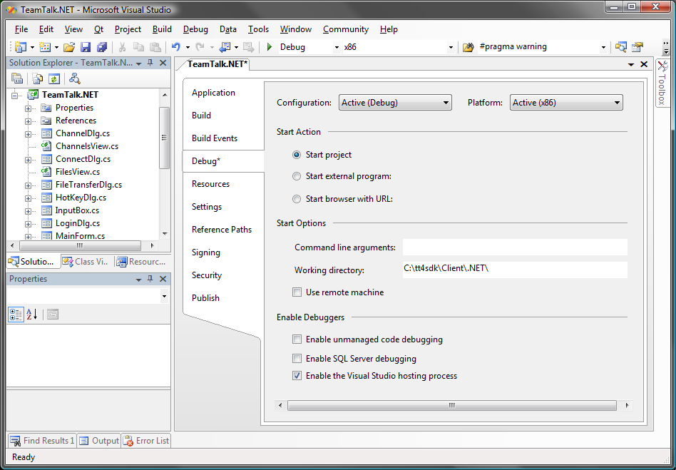
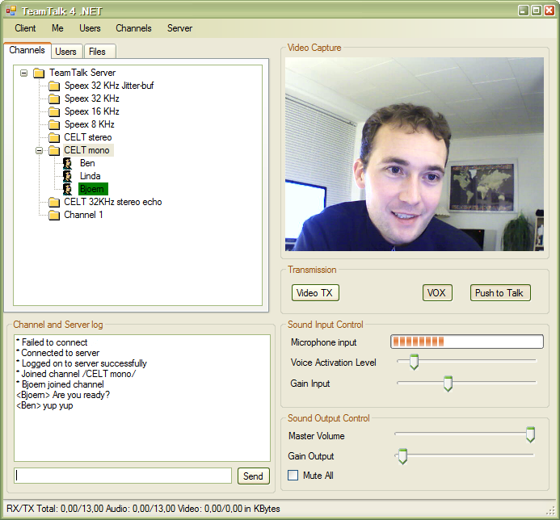
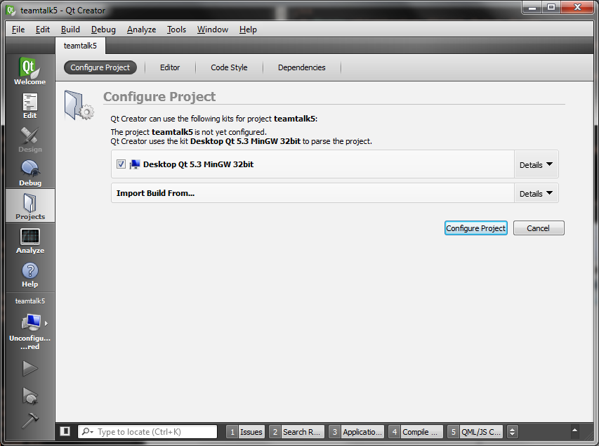
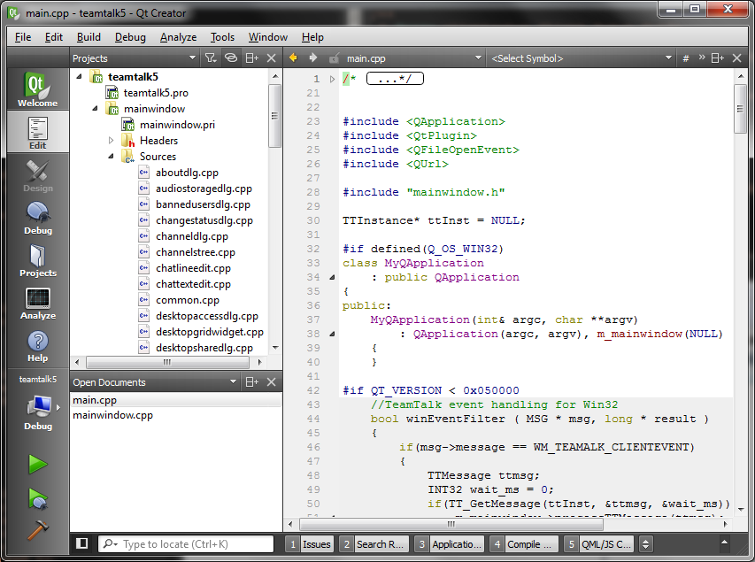
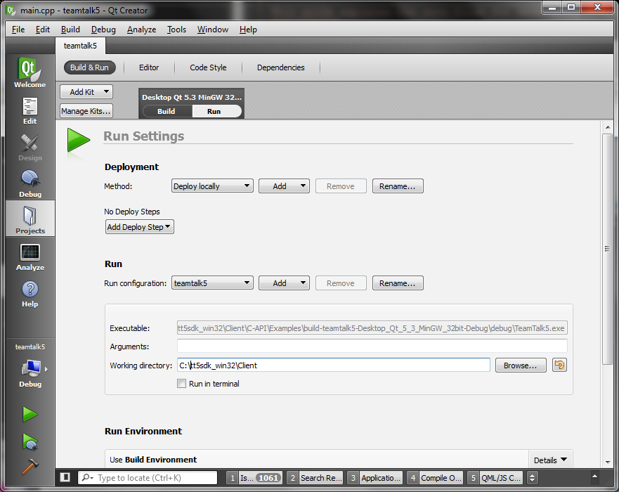

- Generated by
 1.9.1
1.9.1
|
TeamTalk 5 Java DLL
Version 5.22A
|
The Examples directory of the TeamTalk 5 SDKs contains examples of how to use the TeamTalk library. Ensure to download the TeamTalk 5 SDK for the platform which the example supports.
Java client examples:
.NET client examples:
C++ client examples:
Swift client examples:
Java server examples:
.NET server examples:
C++ server examples:
This sample application applies to the following plaforms:
This sample application is located in the SDK's folder:
Client/jTeamTalk This example is a TeamTalk client application which runs as a console application.
The jTeamTalk example application is a very basic example of how the TeamTalk client works. Here's what it does:
This sample application applies to the following plaforms:
This sample application is located in the SDK's folder:
Client/TeamTalkAndroid This is a TeamTalk client example for Android. The easiest way to get this example running is to use Android Studio 2.1 or later.
In Android Studio navigate to the TeamTalkAndroid project located in Client/TeamTalkAndroid.

The Android Studio should look like this after opening.

The TeamTalk 5 JNI library (libTeamTalk5-jni.so) for the example project is located in Client/TeamTalkAndroid/src/main/jniLibs/armeabi-v7a. This is the same file as is located in Library/TeamTalkJNI/libs/armeabi-v7a
The TeamTalk 5 jar file which loads the TeamTalk 5 JNI library is located in Client/TeamTalkAndroid/libs. This is the same file as is located in Library/TeamTalkJNI/libs and the source code for the jar file is located in Library/TeamTalkJNI/src
This sample application applies to the following plaforms:
This sample application is located in the SDK's folder:
Client/TeamTalkApp.NET This example shows how to connect to a server and join channels where it's possible to stream audio and video data to other users.
To build the example start Visual Studio 2010 or later and open the file TeamTalk.NET.csproj. Once opened notice the configuration says x86 and not "Any CPU" as it usually does in .NET projects. This is because the .NET DLL is compiled to run on x86. On Windows x64 Visual Studio will automatically build applications for x64 execution. In order to run the example the working directory for the debugger must be set to the Library/TeamTalk_DLL directory of the SDK (where the native TeamTalk5 DLL is located). This is done in the project settings as shown in the picture below:

Now build the example and run the application.
Before connecting to a server press "File -> Preferences" to set up your audio and video devices. Once this is done press "File -> Connect" and connect to a TeamTalk server. To join a channel right-click it in the tree view and click "Join Channel". Below is shown an example of the .NET example in use.

Before building your own .NET application ensure to read the section TeamTalk SDK Contents.
This sample application applies to the following plaforms:
This sample application is located in the SDK's folder:
Client/ttserverlog.net This is a simple console application which stores all audio sent to the server to a specific directory on disk. It also displays all user text chat sessions, file uploads, etc. This example gives a good idea of how events are processed in TeamTalk when using the pool mechanism instead of having events posted to a Windows Forms application.
This sample application applies to the following plaforms:
This sample application is located in the SDK's folder:
Client/qtTeamTalk This guide explains how to build the TeamTalk Qt client example using Qt Creator and the Qt SDK for Windows 32-bit MinGW. The Qt SDK can be downloaded from qt.io and the Qt SDK includes Qt Creator.
Once installed start Qt Creator and open the project file: Client/qtTeamTalk/teamtalk5.pro or Client/qtTeamTalk/teamtalk5pro.pro for the Professional Edition of the SDK.
Qt Creator will now ask to configure the project:

Press Configure Project and the TeamTalk project will now be opened:

Now click the hammer icon in the bottom left of the toolbar to build the project and wait for the build process to complete. Once completed click the Projects icon in the left toolbar and then the Run tab. Specify the Working directory to point to the location of the C-API DLL file:

Finally press the play icon in the left toolbar to run the application.
This sample application applies to the following plaforms:
This sample application is located in folder:
Client/ttserverlog This is a simple console application which stores all audio sent to the server to a specific directory on disk. It also displays all user text chat sessions, file uploads, etc. This example gives a good idea of how events are processed in TeamTalk when using TT_InitTeamTalkPoll() and events are not posted to a window handle.
This sample application applies to the following plaforms:
This sample application is located in folder:
Client/iTeamTalk This is the TeamTalk 5 client application which can also be found in the App Store. Open the project in Xcode.
This sample applies to the following plaforms:
This sample application is located in folder:
Server/jTeamTalkServer This sample application shows how to run a TeamTalk server which authenticates users and is able to log client events on the server.
Note that it's only possible to use the TeamTalk Server API in TeamTalk Professional edition.
This sample applies to the following plaforms:
This sample application is located in folder:
Server/TeamTalkServer.NET This sample application shows how to run a TeamTalk server which authenticates users and is able to log client events on the server.
Note that it's only possible to use the TeamTalk Server API in TeamTalk Professional edition.
This sample application is located in folder:
Server/TeamTalkServer This is an example of programming a TeamTalk server. To use the TeamTalk server API include the file TeamTalkSrv.h instead of TeamTalk.h in your project.
Note that it's only possible to use the TeamTalk Server API in TeamTalk Professional edition.